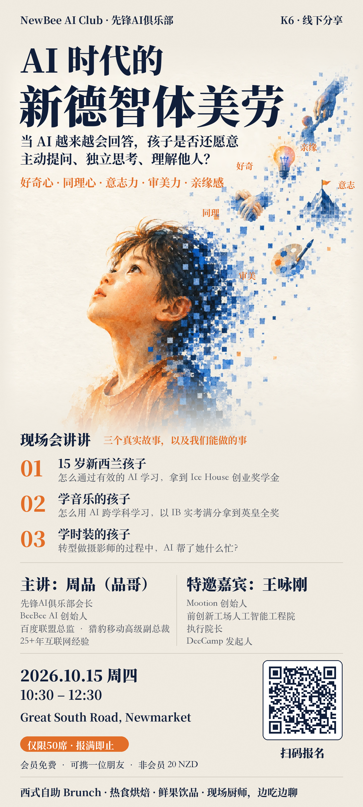

活动预告 K6 · 第六场 Keynote · 线下分享
AI 时代的新德智体美劳
当 AI 越来越会回答，孩子是否还愿意
主动提问、独立思考、理解他人？
好奇心 · 同理心 · 意志力 · 审美力 · 亲缘感
主讲：周品（品哥）特邀嘉宾：王咏刚
- 时间 · 新西兰当地时间
10:30–12:30- 地点
- Great South Road, Newmarket
具体地址报名后通知
限 50 席 · 报满即止
会员免费，可携一位朋友 · 非会员 20 NZD
三个真实故事，以及我们能做的事。
AI 越来越擅长给出答案，但成长不只是知道答案。本期从三个孩子的学习与探索经历出发，一起聊聊 AI 时代的好奇心、同理心、意志力、审美力与亲缘感。
这一次，和谁一起聊？
主讲：周品（品哥）
先蜂AI俱乐部会长、BeeBee AI 创始人，曾任百度联盟总监、猎豹移动高级副总裁，拥有 25 年以上互联网经验。
特邀嘉宾：王咏刚
Motion 创始人、前创新工场人工智能工程院执行院长、DeeCamp 发起人。
带上问题，我们现场聊。
2026 年 10 月 15 日（周四），10:30–12:30，新西兰当地时间。
Great South Road, Newmarket，具体地址报名后通知。
限 50 席，报满即止。会员免费，可携一位朋友；非会员 20 NZD。
西式自助 Brunch、热食烘焙、鲜果饮品，现场厨师，边吃边聊。
此入口与官方海报二维码一致；活动报名与俱乐部入会申请是两个独立入口。
查看官方海报与报名二维码

活动信息据本期官方海报整理。
查看全部活动